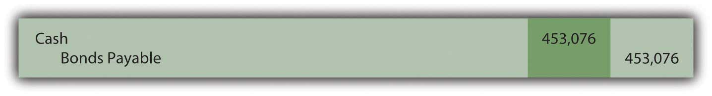
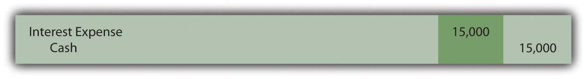
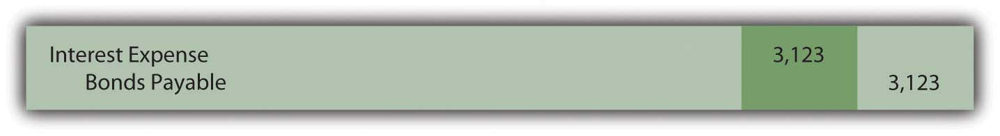
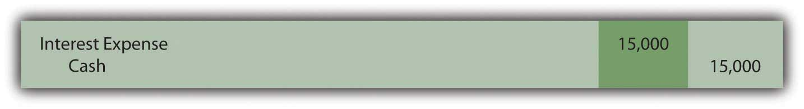
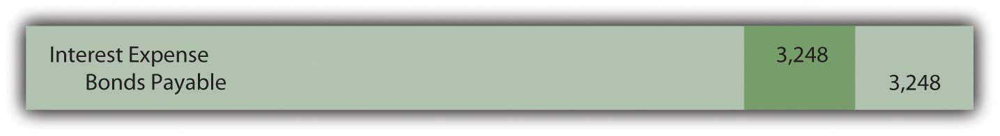

At the end of this section, students should be able to meet the following objectives:
Question: In the previous examples, both the interest rates and payments covered a full year. How is this process affected if interest payments are made at other time intervals such as each quarter or semiannually?
As an illustration, assume that on January 1, Year One, an entity issues bonds with a face value of $500,000 that will come due in six years. Cash interest payments at a 6 percent annual rate are required by the contract but the actual disbursements are made every six months on June 30 and December 31. The debtor and the creditor negotiate an effective interest rate of 8 percent per year. How is the price of a bond determined and the debt reported if interest payments occur more often than once each year?
Answer: None of the five basic steps for issuing and reporting a bond is changed by the frequency of the interest payments. However, both the stated cash rate and the effective rate must be set to agree with the time interval between the payment dates. The number of periods used in the present value computation is also based on the length of this interval.
In this example, interest is paid semiannually so each time period is only six months in length. The stated cash rate to be used for that period is 3 percent or 6/12 of 6 percent. Similarly, the effective interest rate is 4 percent or 6/12 of 8 percent. Both of these interest rates must align with the specific amount of time between payments. Over the six years until maturity, there are twelve of these six-month periods of time.
Thus, the cash flows will be the following:
Plus
As indicated, the effective rate to be used in determining the present value of these cash payments is 4 percent per period or 6/12 times 8 percent.
http://www.principlesofaccounting.com/ART/fv.pv.tables/pvof1.htm
http://www.principlesofaccounting.com/ART/fv.pv.tables/pvofordinaryannuity.htm
Figure 14.24 January 1, Year One—Issuance of $500,000 Bond to Yield Effective Rate of 4 Percent Semiannually
On June 30, Year One, the first $15,000 interest payment is made. However, the effective rate of interest for that period is the principal of $453,076 times the six-month negotiated rate of 4 percent or $18,123 (rounded). Therefore, the interest to be compounded for this period is $3,123 ($18,123 interest less $15,000 payment). That is the amount of interest recognized but not paid on this day.
Figure 14.25 June 30, Year One—Cash Interest Paid on Bond
Figure 14.26 June 30, Year One—Interest on Bond Adjusted to Effective Rate
For the second six-months in Year One, the compound interest recorded above raises the bond’s principal to $456,199 ($453,076 principal for first six months plus $3,123 in compound interest). Although another $15,000 in cash interest is paid on December 31, Year One, the effective interest for this six-month period is $18,248 (rounded) or $456,199 times 4 percent interest. Compound interest recognized for this second period of time is $3,248 ($18,248 less $15,000).
Figure 14.27 December 31, Year One—Cash Interest Paid on Bond
Figure 14.28 December 31, Year One—Interest on Bond Adjusted to Effective Rate
The Year One income statement will report interest expense of $18,123 for the first six months and $18,248 for the second, giving a total for the year of $36,371.
The December 31, Year One, balance sheet reports the bond payable as a noncurrent liability of $459,447. That is the original principal (present value) of $453,076 plus compound interest of $3,123 (first six months) and $3,248 (second six months).
Once again, interest each period has been adjusted from the cash rate stated in the contract to the effective rate negotiated by the two parties. Here, the annual rates had to be halved because payments were made semiannually. In addition, as a result of the compounding process, the principal balance is moving gradually toward the $500,000 face value that will be paid at the end of the bond term.
Link to multiple-choice question for practice purposes: http://www.quia.com/quiz/2093024.html
Bonds often pay interest more frequently than once a year. If the stated cash rate and the effective rate differ, present value is still required to arrive at the principal amount to be paid. However, the present value computation must be adjusted to reflect the different pattern of cash flows. The length of time between payments is considered one period. The effective interest rate is then determined for that particular period of time. The number of time periods used in calculating present value is also based on this same definition of a period. The actual accounting and reporting are not affected, merely the method by which the interest rates and the number of periods are calculated.
Following is a continuation of our interview with Kevin G. Burns.
Question: Assume that you are investigating two similar companies because you are thinking about recommending one of them to your clients as an investment possibility. The financial statements look much the same except that one of these companies has an especially low amount of noncurrent liabilities while the other has a noncurrent liability total that seems quite high. Which company are you most likely to recommend?
Kevin Burns: I have done well now for many years by being a conservative investor. My preference is always the company that is debt free or as close to debt free as possible. I do not like leverage, never have. I even paid off my own home mortgage more than ten years ago.
On the other hand, long-term liabilities have to be analyzed as they are so very common. Is any of the debt convertible so that it could potentially dilute everyone’s ownership in the company? Is the company paying a high stated rate of interest? Why was the debt issued? In other words, how did the company use the money it received? As with virtually every area of a set of financial statements, you have to look behind the numbers to see what is actually happening. If the debt was issued at a low interest rate in order to make a smart acquisition, I am impressed. If the debt has a high interest rate and the money was not well used, that is not attractive to me at all.
Joe talks about the five most important points in Chapter 14 "In a Set of Financial Statements, What Information Is Conveyed about Noncurrent Liabilities Such as Bonds?".